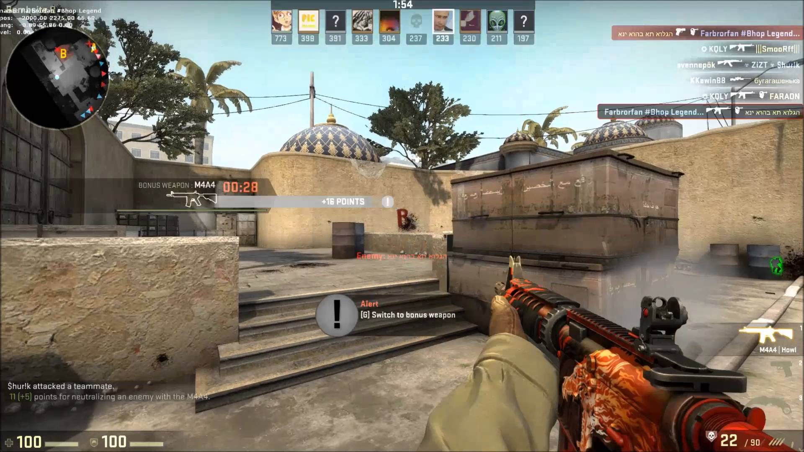
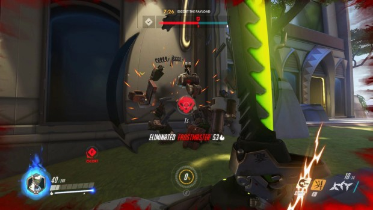
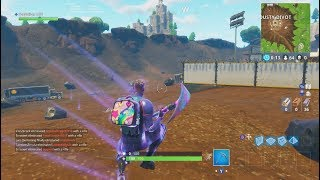
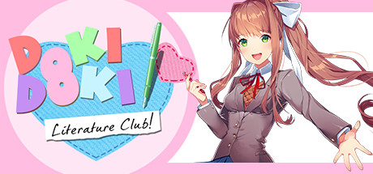

Michael's Favorite Games
Counter Strike: Global Offensive

This game has been one of the leading first-person-shooters since the first version’s release back in 2000. In the last 18 years, the game’s mechanics have been refined up
until today’s version, which is nearly perfect for it’s esports scene which is worth over 400 million dollars. In this game, there are two teams, Counter Terrorists and Terrorists.
The Terrorists attempt to take over a bomb site from the Counter Terrorists, and plant a bomb. The Counter Terrorists must try to stop them in time by defusing the bomb.
Doing well in a match awards the player with money, which they use to purchase better weapons and gear between rounds.
Overwatch

While this game may seem like a first-person shooter, it actually demands skills that are more suited for a MOBA. While it’s a relatively new game, it’s main esports league,
the Overwatch League, is worth over $100 million. This game has a variety of different modes, such as Control (King of the Kill), 2CP (Capturing two point while the other team
attempts to defend it), and Payload (Attacking team tries to push a payload along a course while the Defending team tries to stop them). What all these modes have in common is that
they are all played by two opposing teams of 6, which are made up by characters of three classes: DPS (in charge of dealing damage to the enemy team), Tanks (in charge of
protecting teammates with shields and soaking up damage), and Healers (tasked with healing teammates so they aren't eliminated).
Fortnite

There’s a huge debate among the gaming community on which of the two main battle royales, PUBG and Fortnite, are superior.
But as someone who has clocked in over 400 hours in both of those games, I can wholeheartedly say that I greatly prefer Fortnite
due to the abundance of weapons and ability to create structures to provide cover or easily transverse the terrain, which greatly reduces the randomness that plagues battle
royale games. In this game, like many other battle royales, 100 players are dropped into a vast map, and start with nothing. In the beginning of the game, they have to search through
houses and shops to find the weapons, ammunition, and gear they need to survive. As the game goes on, players can pick up the items dropped by other players who were eliminated, which
can give the player the edge they need to win. As the game is a battle royale, only one player or team can win, if they are the last left standing.
Doki Doki Literature Club

Though it may look like a cutesy visual novel, don’t let this game fool you. The entirety of the game only lasts about four hours, and it’s free,
so I’m not going to spoil it (highly recommend you play it). After the first 1-2 hours, the game gradually shifts tones to become the psychological horror game it really is.
Previously happy and care-free characters spiral into madness and self-harm, and the game ends with a shocking twist. Near the end, you must learn how the game's file
system works, and manipulate the files to progress towards the "true ending" of the game. It's a rather short game, but the story and atmosphere ranks it among some of my
favorite games.